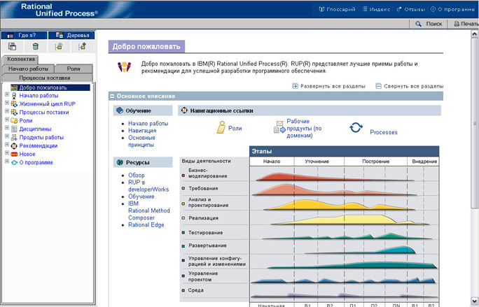

| Навигация по сайтам методов |
 |
|
|
Сайт метода состоит из набора страниц в формате HTML, которые можно просматривать с помощью браузеров Microsoft® Internet Explorer, Mozilla и Firefox. Примечание: для работы некоторых функций, реализованных в виде аплетов, например Поиск и Мое представление, требуется JRE 1.4.2 или одной из последующих версий (JRE можно загрузить с сайте http://java.sun.com/j2se). Кроме того, можно опубликовать конфигурацию без аплетов - в этом случае не будут доступны функции Поиск и Мое представление, но и не будет нужна JRE. Если просматриваемый сайт был опубликован без аплетов, функции Поиск и Мое представление будут недоступны. На следующем рисунке показаны основные управляющие элементы, применяемые для просмотра сайта метода. Для просмотра кратких инструкций по просмотру сайта щелкните на нужной области рисунка.  Элементы среды браузераГлоссарийНажав эту кнопку, можно открыть отдельное окно с глоссарием, в котором в алфавитном порядке перечислены термины сайта метода и приведены их определения и ссылки на страницы с примерами. ИндексНажав на кнопку Индекс, можно перейти в новое окно с алфавитным списком разделов сайта метода. Щелкнув на ссылке в оглавлении, можно открыть текст соответствующей страницы в основном окне. ОтзывыНажав кнопку Отзывы, можно перейти в окно отправки отзыва о Rational по электронной почте. В отзыв будет автоматически вставлена ссылка на страницу, открытую в основном окне. О программеПри нажатии кнопки О программе открывается окно с информацией о версии программы и авторских правах. Поиск
Функция поиска позволяет выполнять поиск разделов сайта по ключевым словам. Все страницы, тема которых имеет отношение
к указанным ключевым словам, будут показаны в окне результатов поиска. Эта функция осуществляет поиск ключевых слов в
описании разделов, а не полнотекстовый поиск по страницам. ПечатьКнопка Печать позволяет напечатать содержимое основного окна на принтере. Основной фреймВ этом фрейме показано содержание метода. Содержание разбито на разделы, которые можно разворачивать и сворачивать. ПредставленияПредставление - это альтернативный способ навигации по страницам сайта. Ниже приведены несколько примеров представлений.
Инструменты создания личных представленийsЭти инструменты предназначены для создания личных представлений сайта методов. Инструкции по работе с инструментами приведены в разделе Справочные материалы: Мое представление . |
© Copyright IBM Corp. 1987, 2005 Все права защищены © Copyright IBM Corp. 1987, 2006. Все права защищены.. |